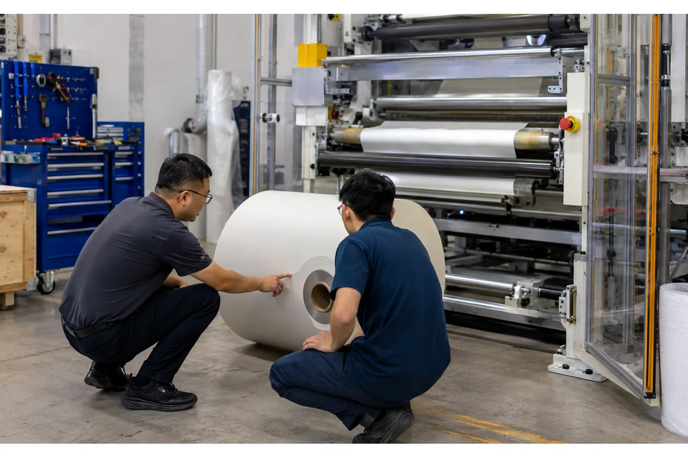

Published August 22, 2026 | By HDPTH Technical Editorial Team

A slitter rewinder can pass its factory test and still need careful commissioning at the customer’s site. The floor may be different, utilities may vary, rolls may arrive with a different core batch, and the local team may use a different material-handling routine. Treating the first power-up as the entire commissioning plan creates avoidable delays and makes it difficult to separate installation issues from process tuning.
This checklist is written for overseas plant managers, engineers and procurement teams. It focuses on the handoff between supplier, installer, production, maintenance, quality and EHS. It does not replace the supplier’s manual, local risk assessment or statutory inspection.
Before the machine arrives: freeze the site plan
Confirm the approved layout, machine footprint, working clearances, roll-loading path, finished-roll unloading path, floor condition, anchoring points and lifting plan. Verify electrical supply, compressed air quality and pressure, grounding, network or remote-support requirements, lighting and ventilation. The site-preparation checklist should be signed by the plant functions that own each utility.
Prepare the material and tooling before the installation crew arrives. Have approved cores, parent rolls, knives, spacers, packaging, measuring tools and PPE available. Protect the material from moisture, dust and damage. A missing core or unavailable parent roll can turn a one-day commissioning task into a week of waiting.
Receiving inspection and mechanical assembly
Inspect the machine and crates for transport damage before moving them into position. Photograph any concern and compare serial numbers, accessory lists and spare parts with the packing list. Check that guards, doors, sensors, shafts, knives, cables, HMI panels and manuals are present.
After positioning, verify level, anchor or isolation requirements, roller alignment, shaft engagement, pneumatic connections and the full travel envelope of moving frames. Do not run the web until protective covers and access interlocks are installed. Ask the supplier to sign the mechanical checklist with the local installer so responsibility for open items is clear.
Safety and control-system checks
Test emergency stops, door interlocks, nip guarding, rotating-shaft access, pneumatic dump or brake behavior, alarm beacons and restart permissions. The plant’s EHS team should conduct the local risk review and confirm that the installation meets the applicable requirements. In the United States, general machine-guarding rules address point-of-operation and ingoing-nip hazards; other jurisdictions have their own requirements.
Load the approved PLC and HMI parameters, confirm software version and back up the original files. Verify motor direction, encoder feedback, sensor scaling, web-guide direction, tension calibration, knife-position references and roll-diameter calculation at low speed. Never tune a high-speed drive before the physical stop and guarding sequence is proven.

Dry run, threading and first web
Start without material and run each drive, pneumatic actuator, shaft, nip and unloading function through its range. Listen for abnormal vibration and check that the HMI displays the correct states. Then thread a low-risk material or a controlled sample at low speed, verifying web path, edge guide, tension, knife clearance, trim route and rewind-core engagement.
Use the same first-wrap and splice procedure that operators will use in production. Record the settings and the time required. If the line includes a web-break detector or accumulator, test its response before increasing speed. The aim is to find alignment, sensor and access problems while the machine is slow and easy to inspect.
Material trial and process-window mapping
Run the approved materials in a planned order: an easy reference roll, the most sensitive grade and the heaviest or largest format. Confirm tension, guiding, slitting, winding, roll handling and finished quality at low, nominal and—if approved—maximum production conditions. Do not accept a single high-speed pass as proof of a process window.
Measure finished-roll width, diameter, weight, end-face condition, hardness or firmness, telescoping, wrinkles, edge quality and downstream unwind behavior. Record material lot, core, speed, tension, taper, nip, knife setup and operator. Compare the result with the FAT samples and agreed acceptance criteria. If the local material differs from FAT, record the difference instead of silently changing the baseline.
Need to prepare an overseas installation?
Send the plant layout, utilities, roll data and intended commissioning schedule. HDPTH can align the site checklist, FAT record and handover documents with the machine scope.
Discuss your project with HDPTHOperator training and maintenance handover
Training should include start-up, recipe selection, knife handling, roll loading and unloading, web threading, tension and guiding adjustments, alarm response, web-break recovery, cleaning, lubrication and emergency-stop rules. Use the actual HMI and material, not only classroom slides. Require each operator to demonstrate the critical tasks under supervision.
Maintenance needs the electrical drawings, pneumatic diagram, spare-parts list, sensor data sheets, calibration routine, software backup and recommended inspection intervals. Quality needs the roll inspection sheet and measurement method. Procurement needs the final scope, open punch-list items, warranty start conditions and contact path for technical support.
Close the punch list with evidence
Keep a dated punch list with an owner, priority, action and evidence. Separate safety-critical issues, production blockers, documentation gaps and optional improvements. A verbal statement that a problem is “not serious” is not a closure record. Attach photos, trend data, replacement-part numbers or a revised drawing.
Repeat the relevant acceptance test after each correction. If a new recipe or software change is made, save the version and explain what changed. The factory acceptance checklist remains a useful reference, but site sign-off should also include local utilities, operators and downstream output.
Prepare the first production week
Do not schedule the line at its maximum mix on the first shift. Start with a repeatable job, keep the FAT roll and the commissioning roll available for comparison, and set a daily review of defects, downtime, changeover time, material lots and operator questions. Tune one variable at a time and keep the approved recipe protected.
Use a simple escalation rule: operator checks the work instruction, maintenance checks the mechanical or electrical condition, process engineering checks the recipe and material, and the supplier is contacted with trend data and photographs. This makes remote support much faster than sending the message “roll quality is bad.”
How HDPTH should structure the handover
For an HDPTH project, request a complete handover package covering approved drawings, electrical and pneumatic documentation, operating and maintenance manuals, spare-parts list, software backup, FAT record, packing list, training record and open-item list. Confirm the delivery scope for high-speed slitting equipment, automatic knife systems or nonwoven rewinding equipment.
Before the installation team leaves, have production, maintenance, quality, EHS and the supplier sign the agreed commissioning record. Include the accepted material, roll format, recipe, speed, measurements and the conditions still requiring follow-up. That record protects both sides and gives the plant a stable baseline for future improvements.
Turn the requirement into an RFQ line item
Before comparing quotations for slitter rewinder commissioning checklist for an overseas plant, put the operating requirement in a form that two suppliers can price and test in the same way. State the material family and its full working range, the parent-roll condition, the finished-roll drawing, the core, the number of lanes, the target speed and the changeover pattern. If the job includes more than one substrate, list each substrate separately instead of using a single average value.
- Define the quality result the plant must accept, such as edge condition, roll profile, web presence, winding stability or commissioning evidence.
- List the measurement method, sample size, inspection locations, conditioning time and who signs the result.
- Ask for the relevant tooling, sensor, tension, guiding, drive and guarding details in the supplier response.
- Require a FAT trial on representative material and a clear method for repeating the setup after cleaning, transport or a material change.
This structure helps procurement compare like with like and gives production, maintenance and quality teams a shared handover record. It also makes later troubleshooting faster: the team can see whether a result changed because of the material, the recipe, the measurement method or the machine. A concise requirement sheet is usually more valuable than a long list of headline specifications with no acceptance method.
Buyer FAQs
What is the difference between FAT and commissioning?
FAT proves agreed machine functions before shipment. Commissioning verifies the installed machine with the customer’s utilities, material, operators, safety controls and downstream process.
What should be ready before a slitter rewinder arrives?
Prepare the approved layout, floor and utility connections, lifting and roll-handling route, cores, parent rolls, knives, measuring tools, PPE, manuals and the responsible plant team.
Should the machine be run at full speed on day one?
Only after guards, controls, alignment, sensors, low-speed web handling and the approved process window are verified. Ramp speed in planned steps while recording roll quality.
Who signs commissioning off?
The supplier and the customer’s responsible production, maintenance, quality and EHS representatives should agree on the checklist and close or assign remaining items.
What documents should be in the handover package?
Include drawings, manuals, software backup, electrical and pneumatic diagrams, spare-parts list, training record, FAT evidence, commissioning results and the open punch list.
Sources
- eCFR: 29 CFR 1910.212 general machine guarding requirements
- HDPTH: Slitter Rewinder Factory Acceptance Test Checklist
- HDPTH: Slitter Rewinder Site Preparation Checklist
Make commissioning part of the machine specification
Share your site, material, operator and handover requirements with HDPTH before shipment. A defined commissioning plan reduces avoidable delays after the machine arrives.
Send an RFQ to HDPTH